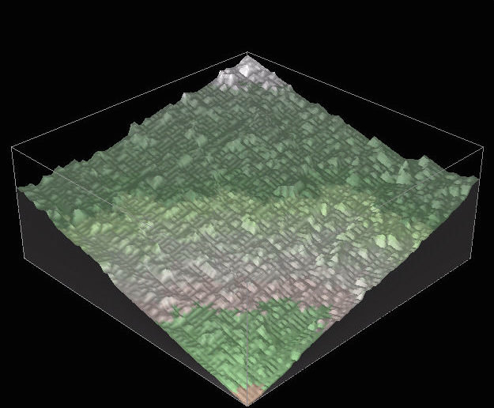
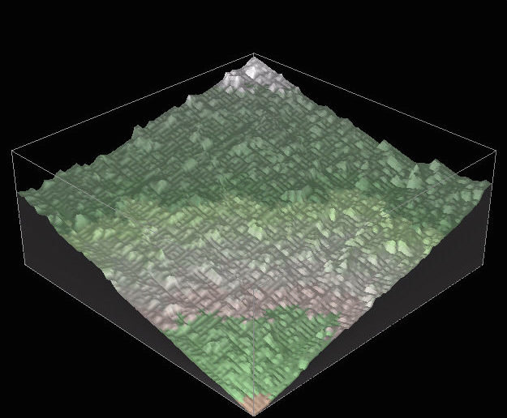

Basin 3D

The maze-building algorithms elsewhere on this site were used to build 3D representations. The illustration above is from one of the C++ implementations. A new, live version in JavaScript and WebGL can be found at this link.

The maze-building algorithms elsewhere on this site were used to build 3D representations. The illustration above is from one of the C++ implementations. A new, live version in JavaScript and WebGL can be found at this link.